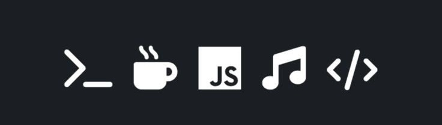

Sobre mim
Quem sou eu

Olá, meu nome é Laerte Alex, sou estudante de Engenharia de Software e estou em busca de oportunidades para aplicar meus conhecimentos e habilidades em projetos desafiadores. Tenho experiência em desenvolvimento web, programação e design de interfaces, e estou sempre em busca de aprender novas tecnologias e aprimorar minhas habilidades.
Minha Jornada

Minha jornada na área de tecnologia começou quando eu era adolescente, e desde então venho me dedicando a aprender e aprimorar minhas habilidades em programação e desenvolvimento web. Durante minha trajetória, participei de diversos projetos acadêmicos e pessoais, o que me permitiu adquirir experiência prática e desenvolver soluções criativas para problemas complexos.
Meus Objetivos
Meus objetivos profissionais são contribuir para o desenvolvimento de soluções inovadoras e impactantes, sempre buscando excelência em meu trabalho e crescimento contínuo. Estou comprometido em agregar valor aos projetos em que participo e em colaborar com equipes multidisciplinares para alcançar resultados excepcionais.
Minhas Habilidades

- HTML/CSS
- JavaScript
- Python
- Git